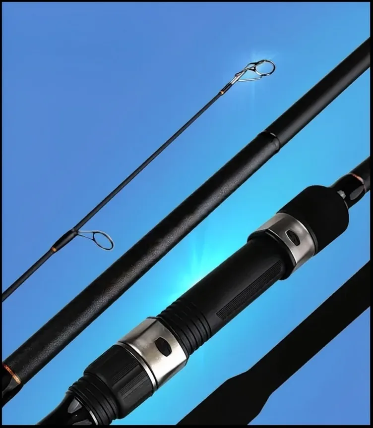
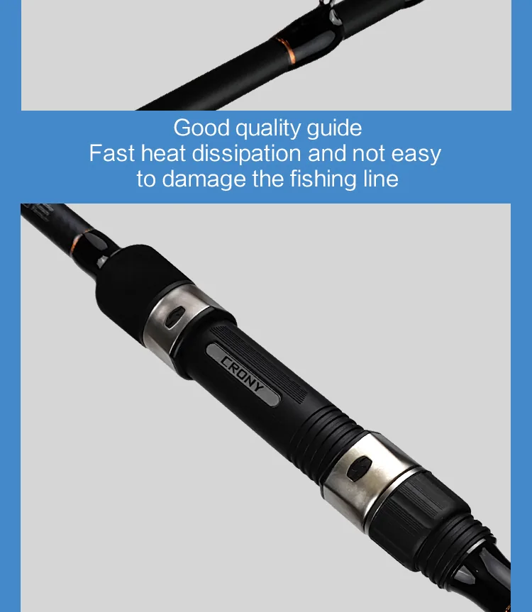
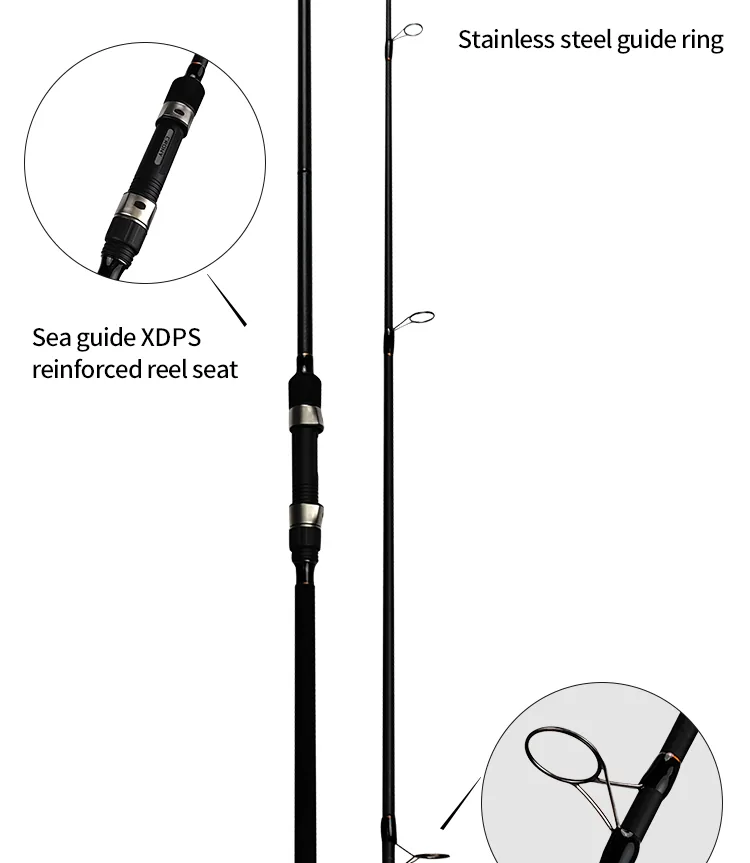
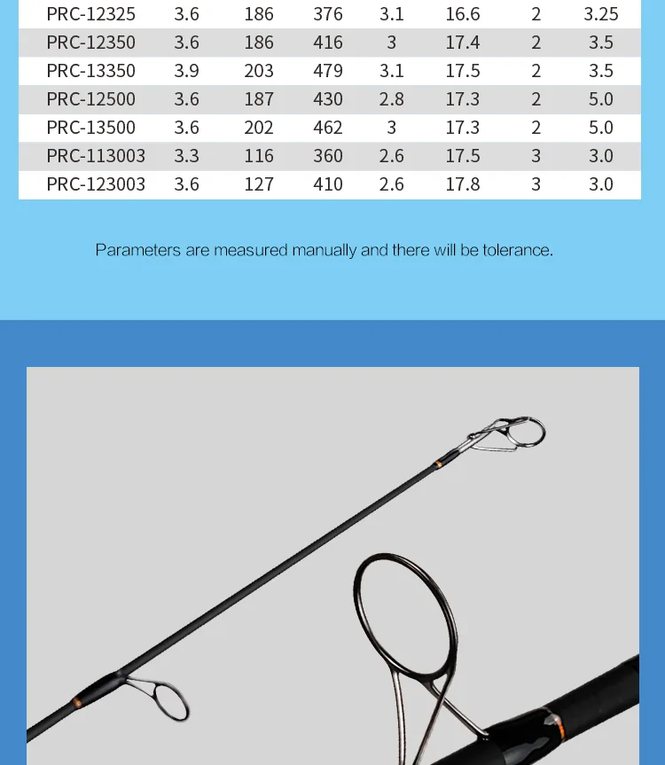
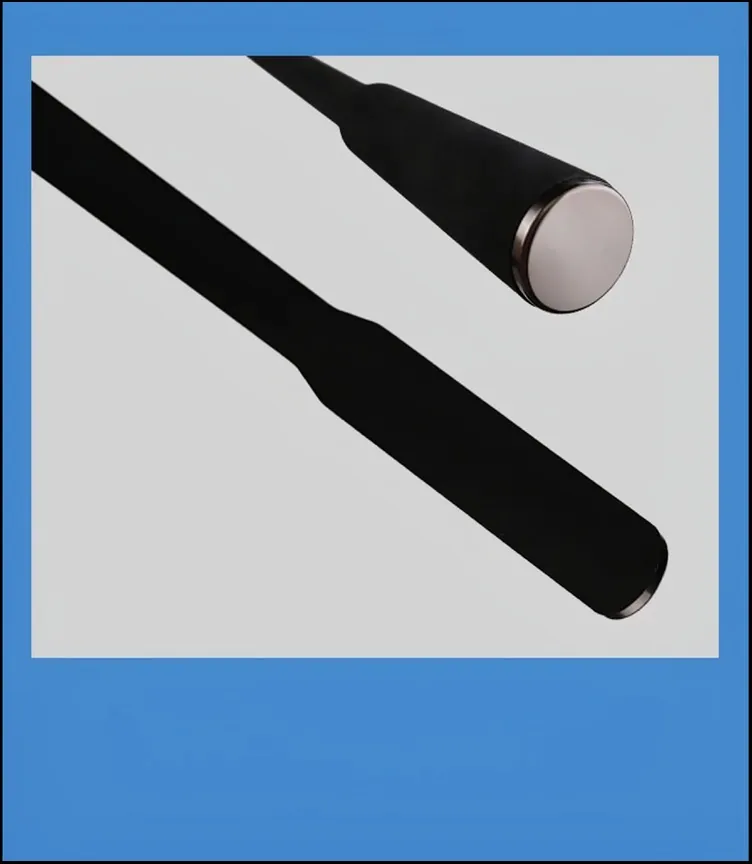

Carp Rods — 9–12 ft Carbon Carp Rod Manufacturer for Europe
Carp angling is the backbone of the European tackle market, and it is the most margin-rich rod category we build. The blanks below follow the European convention: two-piece construction, 2.75–3.0 lb test curves, slim diameters and subdued cosmetics that UK and continental anglers expect. If your range needs 10 ft stalking rods or 13 ft spod and marker rods, those are built on the same tooling.
Who fishes them: specimen carp anglers fishing lakes, rivers and commercials across the UK, France, Germany, the Netherlands and Italy — anglers who cast 100 m+ with heavy leads and PVA bags and who judge a rod by its recovery rate and blank recovery speed.
Factory Reference Gallery
Carp Rods — 9–12 ft Carbon Carp Rod Manufacturer for Europe — Production Reference
Product, detail and application photos from our Weihai partner factory floor. Click any image to enlarge.






Need a different length, action, guide train or private-label finish? Every rod below can be re-specced.
Reference Specification Table
Real production data from current Weihai tooling. Any model can be customized — treat these as the starting point of your own program.
| Model | Length | Closed Length | Sections | Weight | Test Curve | Tip / Butt Dia. | Line Rating | Handle | Carbon Grade |
|---|---|---|---|---|---|---|---|---|---|
| PRC-9300 | 2.70 m (9'0") | 140 cm | 2 | 256 g | 3.0 lb test curve | 2.6 / 14.9 mm | — | Slim EVA + duplon | — |
| PRC-10300 | 3.00 m (10'0") | 156 cm | 2 | 315 g | 3.0 lb test curve | 2.7 / 16.0 mm | — | Slim EVA + duplon | — |
| PRC-12275 | 3.60 m (12'0") | 186 cm | 2 | 386 g | 2.75 lb test curve | 2.7 / 16.4 mm | — | Slim EVA + duplon | — |
| PRC-12300 | 3.60 m (12'0") | 186 cm | 2 | 421 g | 3.0 lb test curve | 2.7 / 16.8 mm | — | Slim EVA + duplon | — |
MOQ 300 pcs per model · Sample lead time 15–20 days · Production lead time 35–45 days after sample approval. Custom length, action, components and branding available on request.
Spec It Like a European Brand
- Length: 9 ft stalking, 10 ft, 12 ft standard, 13 ft spod / marker
- Test curve: 2.5 lb, 2.75 lb, 3.0 lb, 3.25 lb, 3.5 lb — verified per blank
- Handle: slim duplon, shrink wrap, cork;Japanese-style abbreviated handles
- Guides: 50 mm butt rings available; anti-friction SIC options
- Cosmetics: matte "continental" finishes, stealth black, custom logo placement
- Compliance: REACH-aware coating choices; UKCA documentation discussed per order
UK & Europe First
Europe is where carp fishing earns its premium. We quote EU-bound programs with documentation your compliance team can review — material declarations and coating compliance discussed before contract, not after. Sea freight to northern European ports via Weihai runs roughly 30–35 days; plan sampling accordingly.
Configure Your Carp Rods Specification
MOQ 300 pcs per model · Sample lead time 15–20 days · Production lead time 35–45 days after sample approval. Custom length, action, components and branding available on request. Choose carbon grade, guide train, reel seat, handle and packaging in the configurator — you will have a quotable specification in about two minutes.